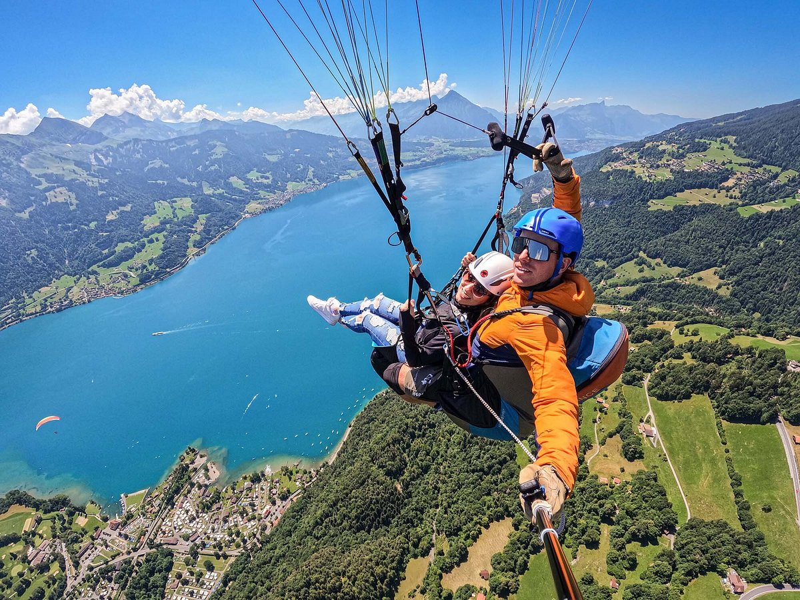
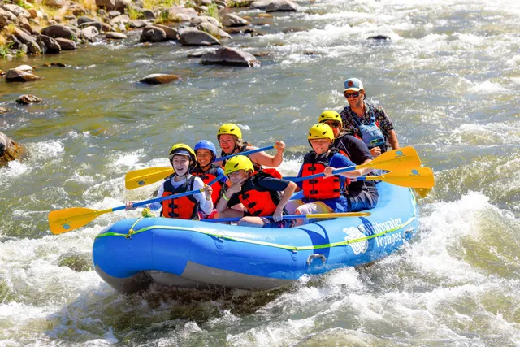
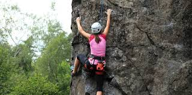
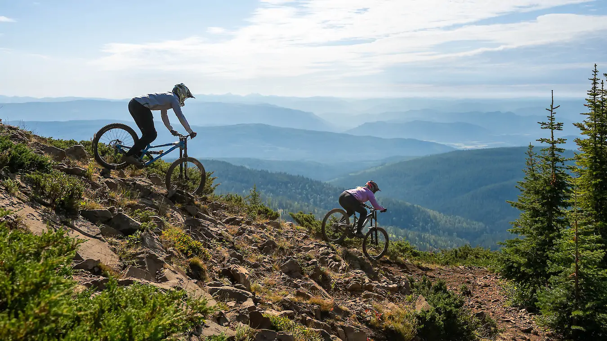
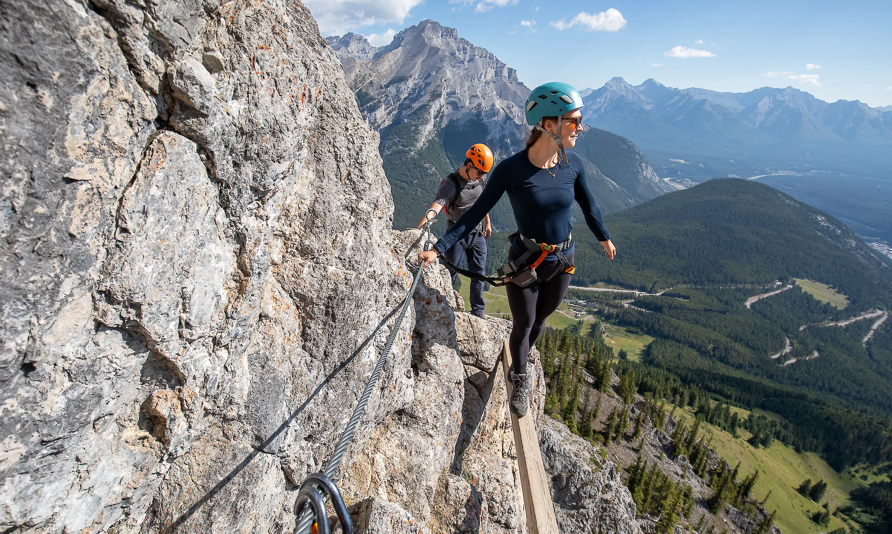
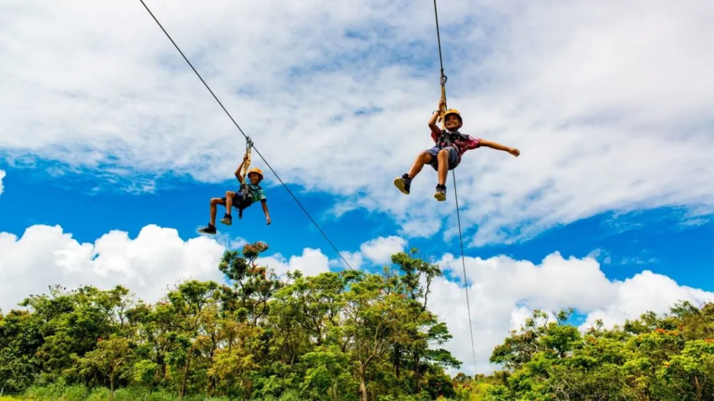

Switzerland, and Interlaken in particular, is considered the adventure sports capital of Europe. Set between two lakes and beneath the towering Bernese Alps, the country offers an almost unmatched range of adrenaline-fuelled activities for thrill seekers. Safety standards are extremely high and most activities can be booked through reputable operators in all major tourist centres.
Top Adventure Activities

Skydiving & Paragliding
Tandem paragliding from Interlaken, Zermatt, or Lauterbrunnen gives you bird's-eye views of the Alps. Skydiving from aircraft over glaciers and lakes is also available. No experience needed.

White-Water Rafting
The Lütschine and Aare rivers near Interlaken offer excellent rafting. The Rhine near Chur and the Reuss near Andermatt are also popular. Runs range from family-friendly to expert level.

Rock Climbing
The Swiss Alps offer world-class climbing from easy sport routes to serious multi-pitch Alpine climbs. The Grimsel area, Ticino, and Rätikon are top destinations. Guided courses available.

Canyoning
Descend through spectacular gorges — abseiling waterfalls, jumping into pools, and sliding down natural rock chutes. The Grimsel Gorge and Saxeten stream near Interlaken are favourites.

Mountain Biking
Hundreds of km of dedicated mountain bike trails across Switzerland, from flowing singletrack to demanding enduro routes. Bike parks at Flims/Laax, Verbier, and Davos are world-class.

Via Ferrata
Protected climbing routes with iron rungs and cables bolted into cliffsides allow non-expert climbers to experience vertical terrain safely. Excellent routes near Murren, Engelberg, and Champéry.

Ski Touring & Heliskiing
Backcountry ski touring through untracked powder snow is a sublime experience for advanced skiers. Helicopter drops onto remote glaciers are available in Verbier and Zermatt.

Zip-Lining
Long-distance zip lines above alpine valleys give a flying sensation over the mountains. The Zip World experience at First above Grindelwald is one of the most thrilling.
Adventure Centres
| Location | Best For | Season |
|---|---|---|
| Interlaken | Paragliding, rafting, canyoning, skydiving | May–October |
| Zermatt | Mountaineering, climbing, heliskiing | Year-round |
| Verbier | Freeride skiing, ski touring, mountain biking | Year-round |
| Flims/Laax | Snowboarding, mountain biking, freestyle skiing | Year-round |
| Andermatt | White-water rafting, road cycling, skiing | Year-round |
| Ticino (Locarno area) | Bungee, canyoning, lake sports | Spring–Autumn |
Safety First
Switzerland has very high safety standards for adventure tourism. Always use licensed, certified operators. Check that guides hold SBS (Swiss Guide Association) certification. Never attempt Alpine activities without appropriate experience, equipment, and ideally a local guide.
Winter Adventure
- Ice climbing — Frozen waterfalls in Kandersteg and Pontresina attract climbers from around the world
- Snowkiting — Combine skiing with kite power on frozen lakes and wide Alpine plains
- Igloo overnight stays — Sleep in a purpose-built igloo at altitude; available at Davos and Zermatt
- Skijoring — Being pulled on skis by a horse — a uniquely Swiss tradition at St. Moritz
- Night skiing — Several resorts open lit runs after dark for an eerie, atmospheric experience